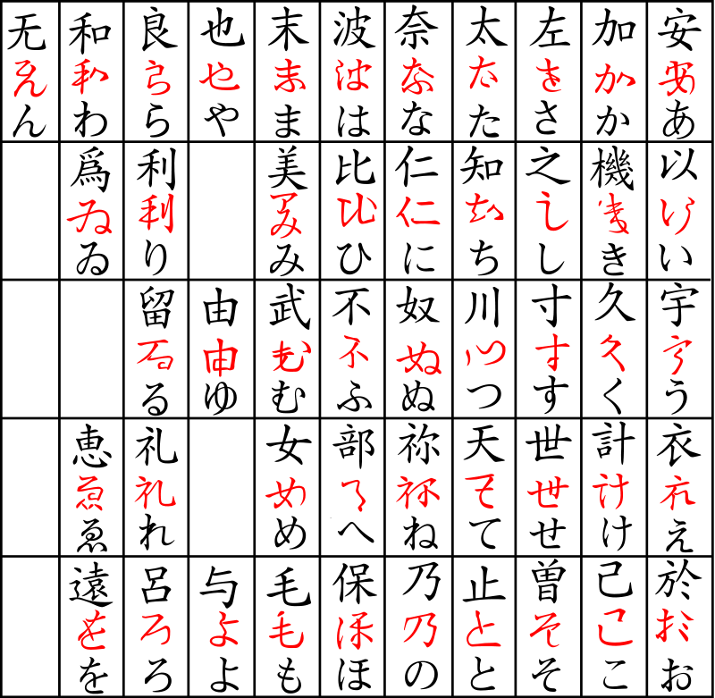
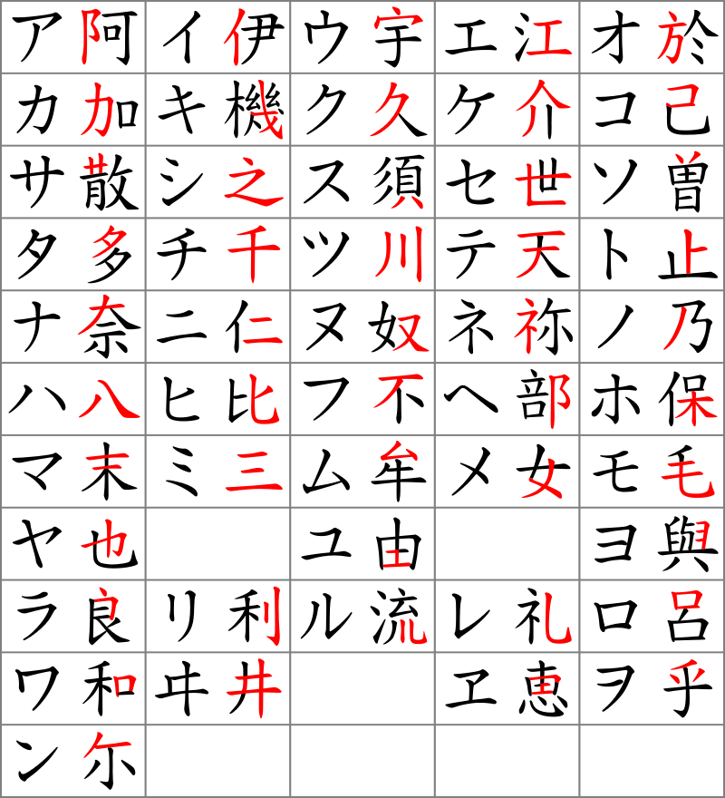

The History of Kana
Why should You Learn about the history of Kana?
The history of Kana is tied deeply into the history of Japan itself, as well as its rich culture. Learning about how it originated will help you understand it more and might spark an interest in the history of Japan. It’s also important to know how the system you’re writing in came to be, and it’s also a fun piece of trivia to know.
The origin of Kana
Hiragana and katakana evolved around the same period - the 10th century, and originated from simplifying (Hiragana) and abbreviating (Katakana) Chinese characters which were the only type of script used in Japan beforehand. Up to that moment, the Chinese Kanji characters were used for both their meaning and pronunciation, which created problems with writing in pure Japanese. Because of that, Manyougana was invented in the 7th century, then gradually evolved into Hiragana and Katakana. Manyougana used a small pool of Kanji characters purely for their sounds, not for their meanings, however they were still written as originally intended in their full forms.
Hiragana
The original Manyougana proved to be difficult to write and read for the Japanese, and as such was developed into Hiragana, which simplified the Chinese characters written in a cursive style into simple to write and easy to read ones. Here is a visual representation of Manyougana being transformed into Hiragana:
By Pmx - Own workCreated using the info from Image:Katakana origine.png, CC BY-SA 3.0, https://commons.wikimedia.org/w/index.php?curid=1561310
Katakana
Katakana, on the other hand, was created by buddhist monks around the same period by abbreviating Chinese characters to match Hiragana 1:1 in quantity. The monks simply took a Chinese character with a desired pronunciation, then separated a small part of it to represent the sound in Katakana. Here is a visual representation of Chinese characters being transformed into Katakana:
By Pmx - Own workCreated using the info from Image:Katakana origine.png, CC BY-SA 3.0, https://commons.wikimedia.org/w/index.php?curid=1561310